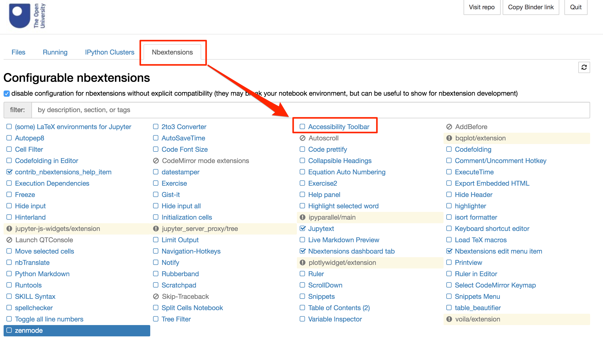
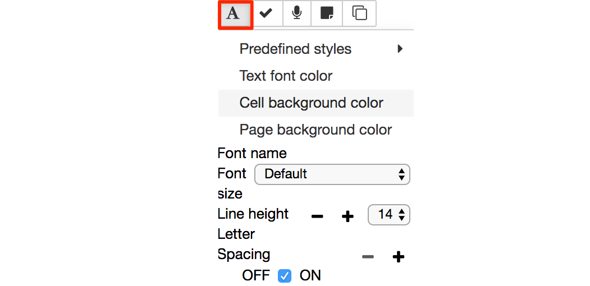

1 Introduction¶
Welcome to this introduction to the practical activities associated with Robotics block of TM129.
The aim of the practical sessions is to introduce you to some of the ways in which we can program a simple simulated robot running inside a two-dimensional world simulator – RoboLab – in your web browser. You will also have the opportunity to try out some simple artificial intelligence and machine learning programs.
The main environment provided for working through the activities is a customised Jupyter notebook environment provided by a virtual computing environment (VCE) that you will run on your own computer or online on Compute Home. Jupyter notebooks were originally designed to support reproducible computational data analysis and research. They are now commonly used across a wide range of disciplines, and are increasingly used to support interactive code-based tutorials as well as distributing teaching materials.
The programming language you will be using in this block is the Python programming language. If you have not used the Python programming language before, or even if you haven’t done any programming before, DON’T PANIC. We have tried to take a pragmatic approach to demonstrating how use to Python code to get things done, and the provided examples show you all you need to know to program the simulated robot yourself.
You will also learn how to use simple command-line style commands in the form of IPython magics (yes, they really are called that!) that allow us to perform various housekeeping acts. In the way they are formed and use ‘switches’ to modify and extend the behaviour of the magic command, they are reminiscent of many Linux command-line commands.
Although the interface to the programming activities is provided through a web browser (most reliably, the Chrome web browser), the software supporting the activities runs inside a virtual environment.
To run the virtual environment locally, you will need to install the Docker application (we’ll provide full guidance around this).
1.1 Workload¶
The RoboLab practical sessions have been written so that if you are an absolute beginner with no experience of robotics or programming you can complete the work each week in four to five hours. The pace is deliberately unhurried and we recommend you take your time. If you already have some programming experience, then RoboLab should take you less time.
Each week’s practical session combines two aspects of robotics. We will teach you the basics of programming in RoboLab, introducing features gradually during the sessions. You will also carry out some investigations using the simulated robot which will give you a taste of some of the more practical aspects of robotics.
Throughout the RoboLab sessions you may encounter a number of activities that are labelled as ‘challenges’. We’ve defined these tasks as challenges because:
there may be several ways of achieving a solution to the task, rather than a single best approach
it may be possible to refine any particular solution and improve its performance.
Challenges implicitly incorporate some performance measure that you can use to rate the effectiveness of your solution, such as the time taken for the robot to complete a task, or the accuracy with which it does so. There is thus a mildly competitive element to the activity. You may not get the chance to compare your solution with those of other students, but you can think about trying to improve the quality of your own solution – though you should not spend too long trying for perfection!
Assessment¶
We hope that by the end of the RoboLab practical sessions you understand some of the basic ideas and can program the simulated robot to do some basic tasks. This should ensure that you can do the assignment and complete the block satisfactorily. The assessment will not include any material covered in the optional practical activities.
1.2 Accessibility¶
Most of the Jupyter notebook features are keyboard accessible. Several optional extensions provide further support in terms of visual styling and limited audio feedback support.
If you struggle to use the simulator for any reason, including but not limited to incompatibility with any tools you may use to improve software access or usability, please raise an issue in the Technical help forum or contact tony.hirst@open.ac.uk directly.
Keyboard interface¶
The Jupyter notebook interface supports a wide range of predefined keyboard shortcuts to menu and toolbar options. The shortcuts can be displayed using the Keyboard shortcuts item from the notebook Help menu or via the ESC-h keyboard shortcut.

You can also add additional shortcuts and/or edit exist shortcuts via the Edit Keyboard shortcuts menu item.

The RoboLab simulator provides a range of keyboard shortcuts to customise the environment display and control certain simulator behaviours. (More details can be found in the actual activity notebooks.)
Visual appearance¶
If required, you can use the jupyter-themes extension to modify the visual appearance of the notebooks. The extension has been pre-installed in the virtual environment. See the jupyterthemes documentation for more information. If you encounter any issues trying to run the extension, post a question to the Technical help forum.
Magnification¶
The apparent size of the notebook contents in general can be zoomed using standard browser magnification tools.
Alternatively, use operating systems tools such as Windows Magnify, the macOS Zoom Window, or other assistive software.
Audio support features¶
Some RoboLab programs ‘speak’. Where the speech is generated as a part of a program flow, a visual display of the spoken phrase will also typically be displayed at the time the phrase is spoken.
An experimental extension to provide screen-reading support to the notebooks is available. If you are interested in helping us further develop and test this extension, or have accessibility issues or concerns either in general or with specific extensions, please email tony.hirst@open.ac.uk.
Accessibility toolbar (experimental)¶
The Jupyter environment includes an accessibility toolbar extension that allows you to control the presentation style of the Jupyter notebook; for example, you can change the font style, size and spacing, the notebook background colour, and so on.
Enabling the Accessibility Extension¶
The accessibility is disabled in the RoboLab environment by default. To use the accessibility extension, you need to enable it first. You can do this from the Nbextensions tab on the notebook home page: tick the Accessibility Toolbar extension to enable the toolbar. When you open a new notebook, the toolbar should be displayed.

Check the Accessibility Toolbar documentation for more information.
All of the styles are saved into local storage when refreshing the page. This means that if you use notebooks on different servers with the same browser, the same accessibility settings will be applied to notebooks on all servers within which you have enabled the accessibility extension.
Controlling colours and fonts using the Accessibility Toolbar¶
If you wish to change the font and interface colours used in RoboLab to improve readability, the Accessibility Toolbar allows you to select the font style, size and colour. You can also modify the line spacing and spacing between individual characters.

The font style applies to all text elements within the notebook itself. This includes the contents of Markdown (text) cells, code cells and code cell outputs.
The toolbar can also be used to control the notebook’s background colour and the cell background colour.
You can also save a style you have defined from the Add new style... option in Predefined styles menu. Once saved, it will be added to the menu list so you can apply it as required.
Other assistive software¶
Please contact the Module Team if you discover that the material does not work with a particular screen reader or dictation system that you would typically expect to be able to use.
1.3 Spell checking ¶
A spell checker is also available to check spelling in notebook Markdown cells. Enable the spellchecker notebook extension or the spell checker via the Accessibility Toolbar Extension.
1.4 Installing the software¶
To install the virtual computing environment (VCE) software, please refer to the Robotics Software Guide.
You will also need to use the Chrome browser to run the RoboLab environment. If you do not already have it installed, you can download and install the Chrome browser from https://www.google.com/chrome/.